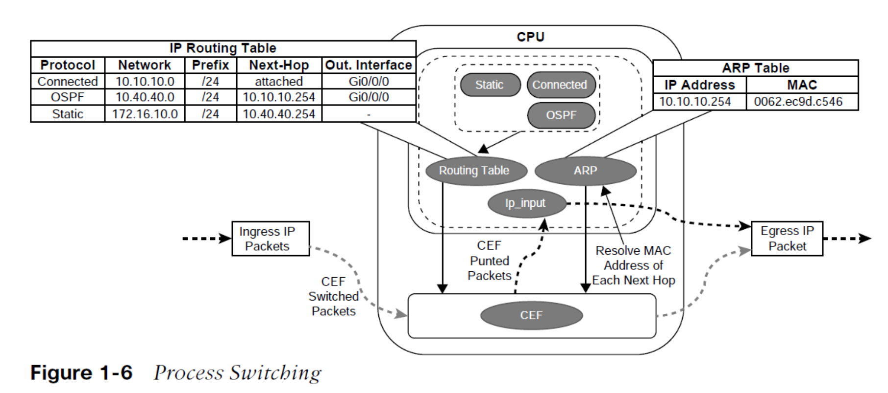
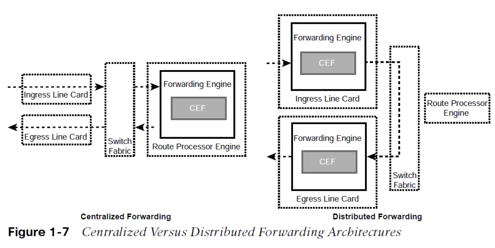

การสวิตช์แพ็กเก็ต IP (หรือการส่งต่อแพ็กเก็ต IP) คือกระบวนการรับแพ็กเก็ต IP เข้ามาทางอินเทอร์เฟซขาเข้า แล้วตัดสินใจว่าจะส่งต่อแพ็กเก็ตนั้นไปยังอินเทอร์เฟซขาออก หรือจะทิ้งแพ็กเก็ตนั้นไป
Cisco ได้พัฒนาการสวิตช์แบบเร็ว (Fast Switching) และ Cisco Express Forwarding (CEF) เพื่อเพิ่มประสิทธิภาพกระบวนการสวิตช์บนเราเตอร์ ทำให้สามารถรองรับปริมาณแพ็กเก็ตจำนวนมากได้
Process Switching หรือที่เรียกอีกอย่างว่า Software Switching หรือ Slow Path เป็นกลไกการสวิตช์ที่ใช้ CPU ทั่วไปบนเราเตอร์ในการควบคุมการสวิตช์แพ็กเก็ต แพ็กเก็ตที่ต้องใช้การประมวลผลแบบซอฟต์แวร์ ได้แก่ แพ็กเก็ตที่มาจากหรือส่งไปยังเราเตอร์เอง (เช่น traffic ควบคุม หรือโปรโตคอล routing), แพ็กเก็ตที่ซับซ้อนเกินกว่าฮาร์ดแวร์จะจัดการได้ (เช่น IP ที่มี IP options) และแพ็กเก็ตที่ต้องการข้อมูลเพิ่มเติมที่ยังไม่ทราบ (เช่น ARP)
การสวิตช์ด้วยซอฟต์แวร์นั้นช้ากว่าการสวิตช์ด้วยฮาร์ดแวร์อย่างมาก กระบวนการ NetIO ถูกออกแบบมาให้รองรับปริมาณการจราจรเพียงส่วนน้อยของระบบ และเมื่อเป็นไปได้ แพ็กเก็ตจะถูกสวิตช์ผ่านฮาร์ดแวร์เสมอ

ตาราง Routing หรือ Routing Information Base (RIB) ถูกสร้างขึ้นจากข้อมูลที่ได้จากโปรโตคอล Routing แบบไดนามิก รวมถึงเส้นทางที่เชื่อมต่อโดยตรงและ Static Routes ส่วนตาราง ARP ได้มาจากข้อมูลของโปรโตคอล ARP
CEF เป็นกลไกการสวิตช์แบบเฉพาะของ Cisco ซึ่งเป็นกลไกเริ่มต้นที่ใช้ในอุปกรณ์ Cisco เกือบทั้งหมดที่มี ASICs (Application-Specific Integrated Circuits) และ NPUs (Network Processing Units) เพื่อประมวลผลแพ็กเก็ตด้วยความเร็วสูง TCAM (Ternary Content Addressable Memory) ของสวิตช์ ช่วยให้สามารถตรวจจับและประเมินค่าหลายๆ ฟิลด์ของแพ็กเก็ตได้พร้อมกัน โดยข้อมูลใน TCAM จะเก็บในรูปแบบ Value, Mask และ Result ซึ่ง Value จะบอกว่าต้องค้นหาฟิลด์อะไร Mask จะบอกว่าฟิลด์ใดที่ต้องสนใจ และ Result จะบอกว่าหากแมตช์กันแล้วควรทำอย่างไร
TCAM ทำงานในระดับฮาร์ดแวร์ จึงมีประสิทธิภาพและรองรับการขยายตัวได้ดีกว่าการสวิตช์ผ่านกระบวนการ
ถ้า Route Processor (RP) มีหน่วยส่งต่อข้อมูล (Forwarding Engine) และตัดสินใจเรื่องการสวิตช์แพ็กเก็ตทั้งหมดเอง เราเรียกว่าสถาปัตยกรรมการส่งต่อแบบศูนย์กลาง (Centralized Forwarding Architecture) เมื่อมีแพ็กเก็ตเข้ามาทาง Line Card แรก แพ็กเก็ตจะถูกส่งไปที่ RP เพื่อทำการตรวจสอบหัวแพ็กเก็ตและกำหนดเส้นทางส่งต่อ จากนั้นแพ็กเก็ตจะถูกส่งต่อไปยัง Line Card ปลายทาง
แต่ถ้า Line Cards มีหน่วยส่งต่อข้อมูลเป็นของตัวเอง สามารถตัดสินใจการสวิตช์แพ็กเก็ตได้โดยไม่ต้องส่งผ่าน RP เราเรียกว่าสถาปัตยกรรมการส่งต่อแบบกระจาย (Distributed Forwarding Architecture)
ในแบบกระจาย เมื่อแพ็กเก็ตเข้ามายัง Line Card ใด Line Card นั้นจะทำการ lookup และส่งออกไปยังอินเทอร์เฟซที่เหมาะสมทันที ถ้าอินเทอร์เฟซปลายทางอยู่บน Line Card อื่น ก็จะส่งแพ็กเก็ตผ่าน Switch Fabric (Backplane) โดยตรง ข้าม RP ไปเลย

Software CEF หรือซอฟต์แวร์ฐานข้อมูลการส่งต่อ (Software Forwarding Information Base) ประกอบด้วย 2 ส่วนหลัก คือ
เมื่อเราเตอร์รับแพ็กเก็ต IP จะตรวจสอบ FIB หากไม่มีข้อมูล จะถือเป็น "Glean" และส่งแพ็กเก็ตไปยัง CPU เพื่อดำเนินการต่อ หากมีข้อมูล ก็จะตรวจสอบ Adjacency Table หากไม่มีข้อมูล Adjacency จะทำการ ARP เพื่อสร้างรายการใหม่สำหรับ CEF
ASICs สามารถสวิตช์แพ็กเก็ตได้ในอัตราที่สูงมาก แต่มีความยืดหยุ่นต่ำเพราะถูกออกแบบมาเฉพาะงาน ในขณะที่ NPUs สามารถโปรแกรมได้ (อัปเดต Firmware ได้ง่าย) ในแพลตฟอร์มที่เป็น Distributed Architecture จะใช้ dCEF (Distributed CEF) ซึ่งเป็นการดาวน์โหลดข้อมูล CEF ไปยัง ASICs และ CPUs บน Line Cards ทุกใบ ทำให้สามารถสวิตช์แพ็กเก็ตได้ในระดับ Distributed ส่งผลให้ปริมาณการส่งต่อแพ็กเก็ตเพิ่มขึ้นอย่างมาก
Route Processor (RP) มีหน้าที่เรียนรู้ท็อปโลยีเครือข่ายและสร้าง Routing Table หาก RP ล้มเหลว จะทำให้ Routing Protocol Reset และเกิดการสูญเสียแพ็กเก็ต
SSO เป็นฟีเจอร์ที่ทำให้เราเตอร์ที่มี RP สองตัวสามารถซิงโครไนซ์ข้อมูลการตั้งค่าและสถานะของ Control Plane ได้ผ่านกระบวนการที่เรียกว่า Checkpointing หาก RP หลักล้มเหลว RP สำรองจะสลับมาแทนที่ทันทีโดยไม่กระทบการส่งต่อแพ็กเก็ต
จำนวน MAC Address และเส้นทางที่สวิตช์ต้องเก็บขึ้นอยู่กับตำแหน่งที่สวิตช์ถูกนำไปใช้ในเครือข่าย หน่วยความจำของตาราง TCAM ถูกกำหนดแบบคงที่ตั้งแต่การบูตเครื่อง หากหน่วยความจำเต็ม จะทำให้การประมวลผลถูกส่งไปยัง CPU ซึ่งส่งผลต่อประสิทธิภาพของสวิตช์
สัดส่วนของการจัดสรรหน่วยความจำ TCAM ถูกเก็บในรูปแบบ Switching Database Manager (SDM) Templates สามารถกำหนดค่า SDM Template บนอุปกรณ์ Catalyst 9000 ได้ด้วยคำสั่ง
และต้องทำการรีโหลดอุปกรณ์ด้วยคำสั่ง
เพื่อให้ค่ามีผล
สามารถตรวจสอบ SDM Template ปัจจุบันได้ด้วยคำสั่ง